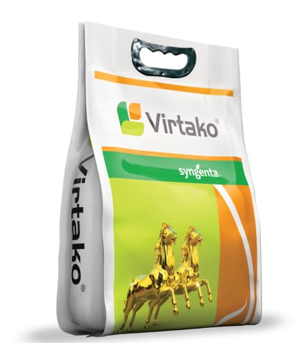

Technical Name: Thiamethoxam 1% + Chlorantraniliprole 0.5% GR
Mode of Action: VirtakoThe dual mode of action present in Virtako ensures a long lasting protection from Stem Borer in Rice & Corn and Early Shoot borer in Sugarcane. Virtako helps in the growth of extra productive tillers & profuse root development along with a lush green healthy crop and gives an extra advantage of increase in the crop growth. Virtako does not stunt the plant growth and provides better ROI, higher yields and peace of mind to the growers.
Major Crops: Rice,Corn,Sugarcane...
Target Pest:Stem Borer...
Presentation Available: 1 Kg, 2.5 Kg, 5 Kg
Company:Syngenta